Same notebook.
Seven kinds of ink.
Actual browser captures of the same homepage in light and dark modes. Click an image to inspect it at full size. These are proposals; the active site is unchanged.
01 · Oxide
The current direction. Chalk, charcoal, and red pencil. A restrained engineering notebook.

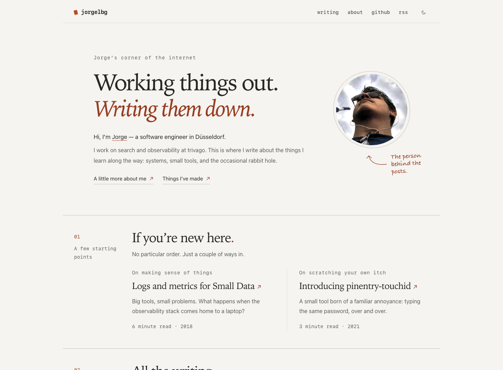

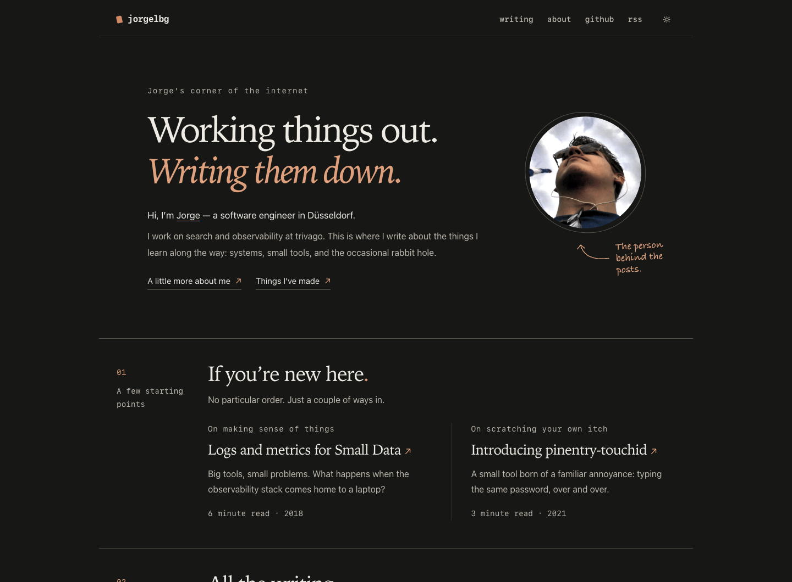
02 · Oxblood
Warm book paper and burgundy ink. Personal, literary, and a natural fit for handwritten marginalia.

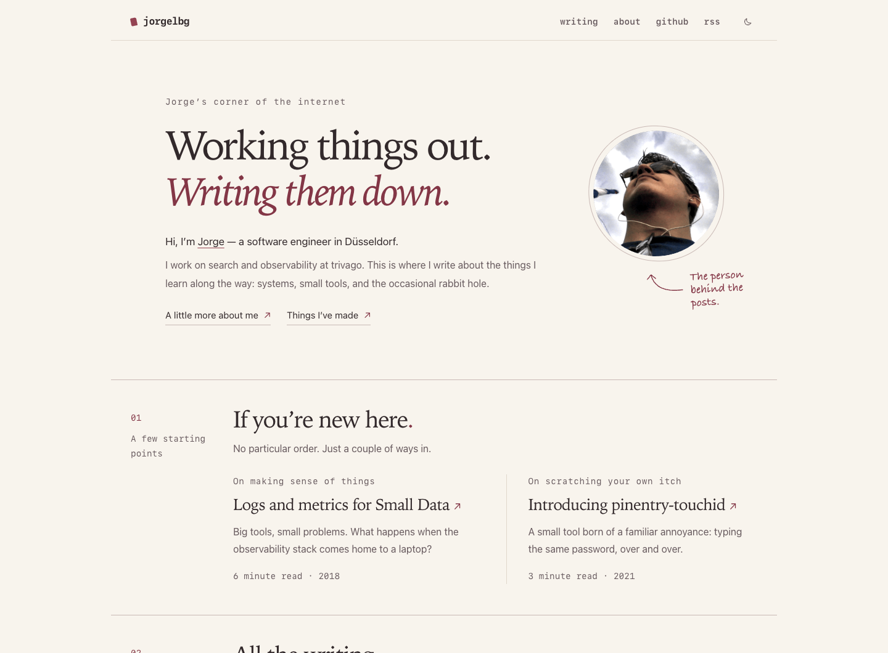

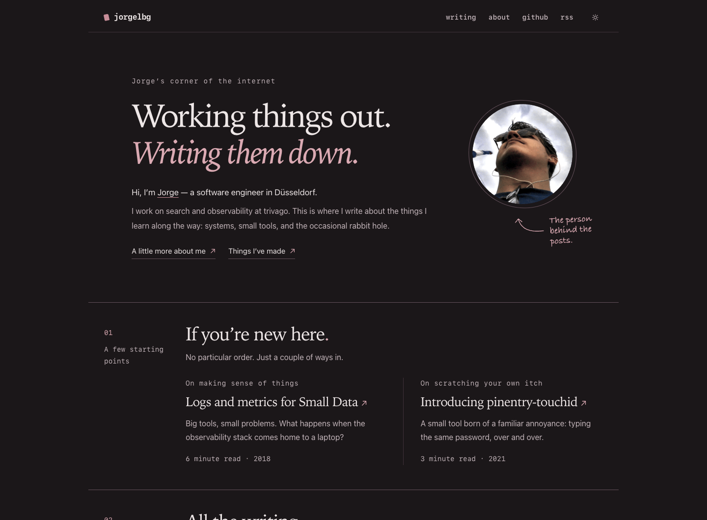
03 · Olive
Limestone and moss, without mint or emerald. A quiet field journal, a little outdoorsy.

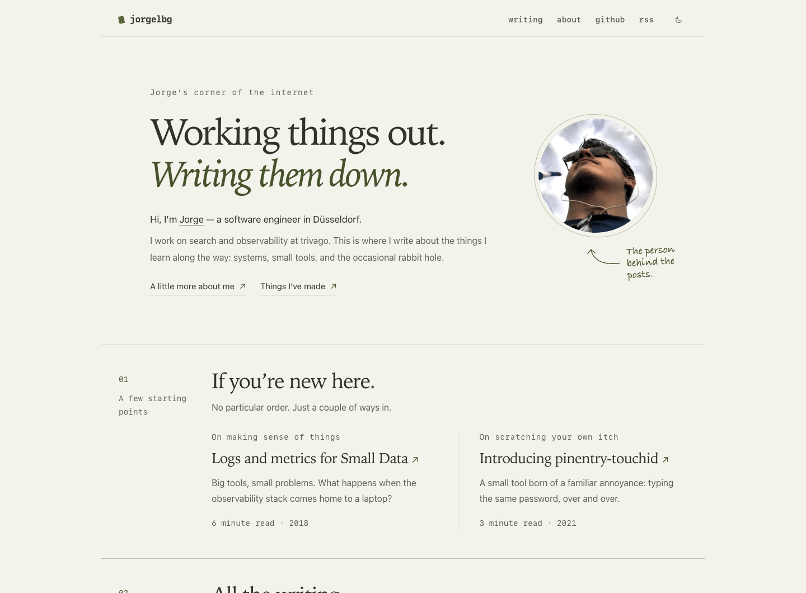

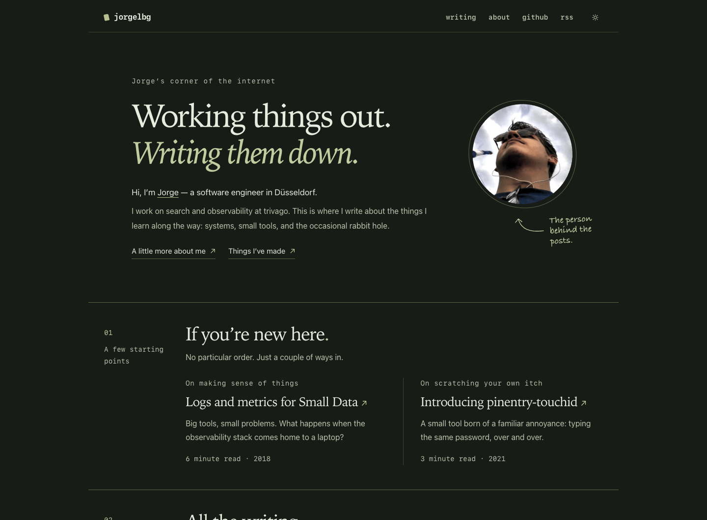
04 · Slate blue
Cool gray paper and faded fountain-pen ink. Technical and neutral, without electric blue or teal.

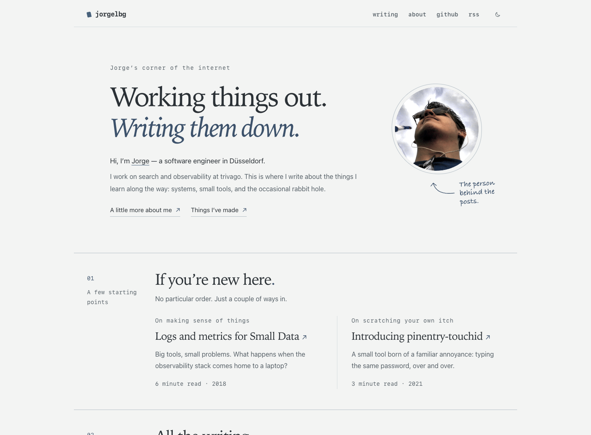

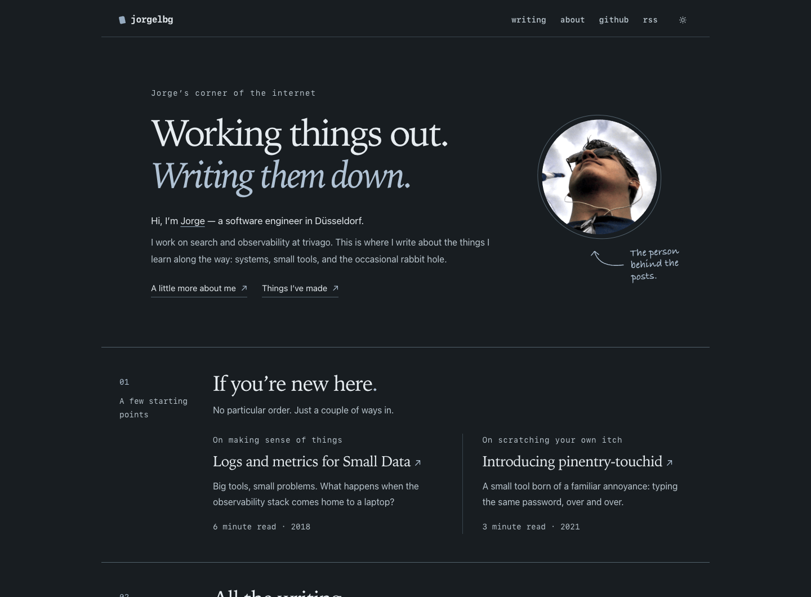
05 · Ochre
Ivory stock and golden-brown ink. A sun-faded print studio, with brass accents rather than bright yellow.

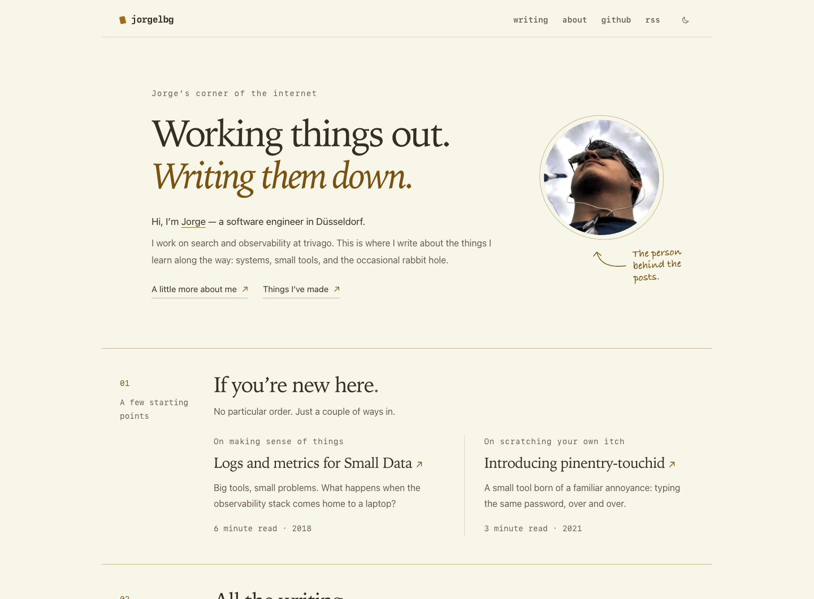

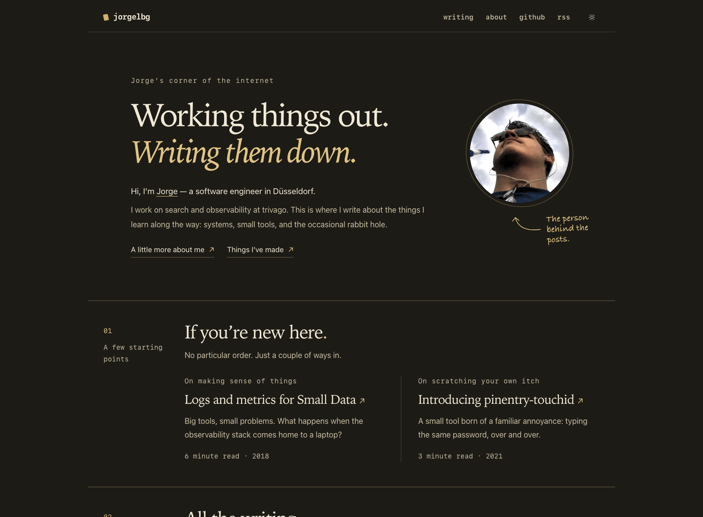
06 · Aubergine
Pearl paper and muted plum. A cooler, slightly unconventional option, without neon purple or gradients.

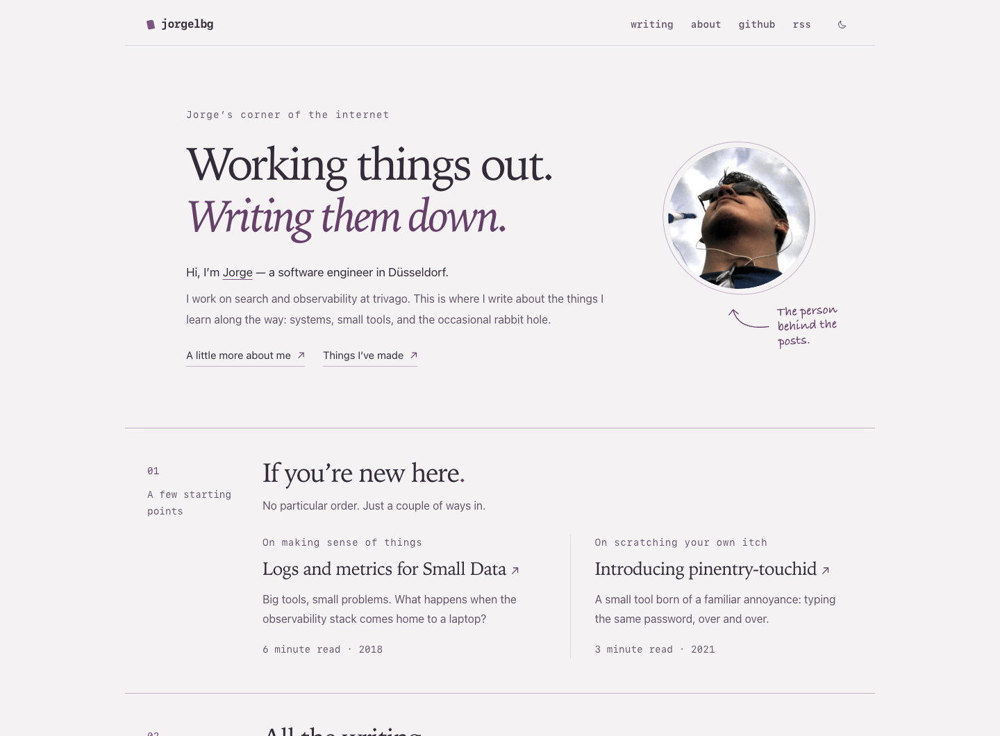

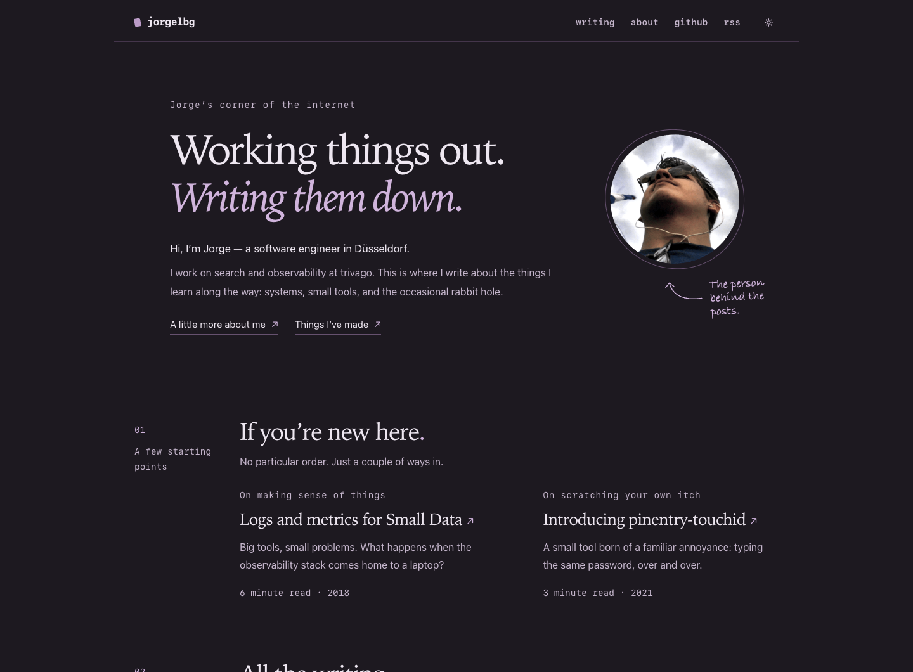
07 · Espresso
Parchment and coffee ink. Nearly monochrome, with sepia annotations. The quietest, warmest option.

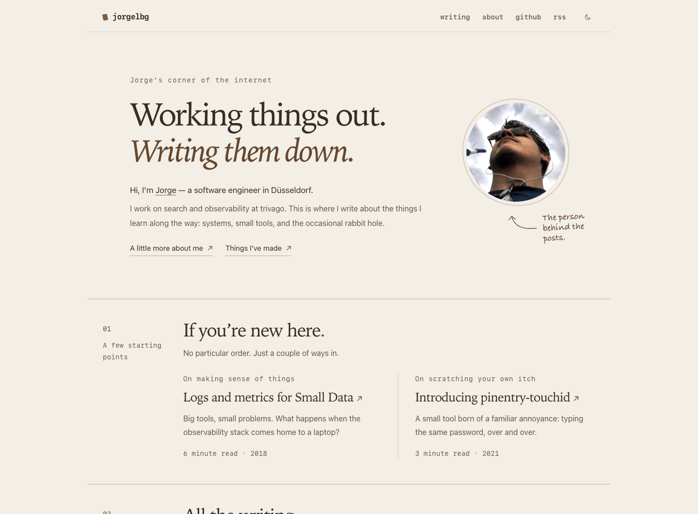

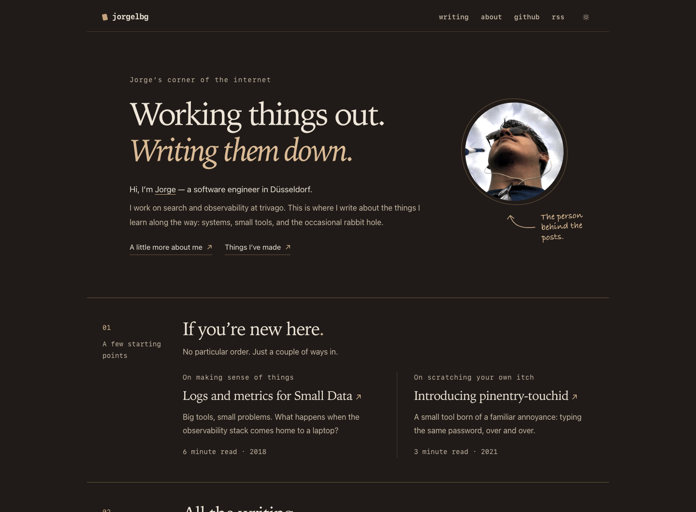
Try one on the site.
In the existing [params] section of config.toml, set customCSS = ["css/palettes/olive.css"], substituting your preferred palette. Then run hugo server --theme oncall --port 1315.
Each palette supports the existing theme toggle and system preference. Set customCSS = [] to restore the default. All proposals passed text-color contrast checks in both modes.
My picks: Oxblood for the most personal, bookish feel; Olive for the strongest departure from software-blog conventions.